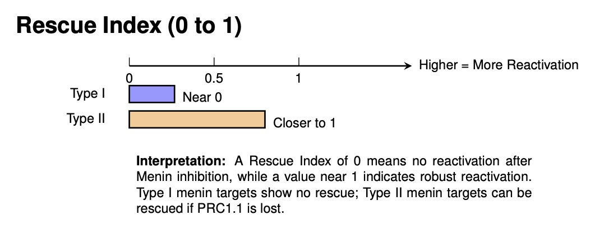
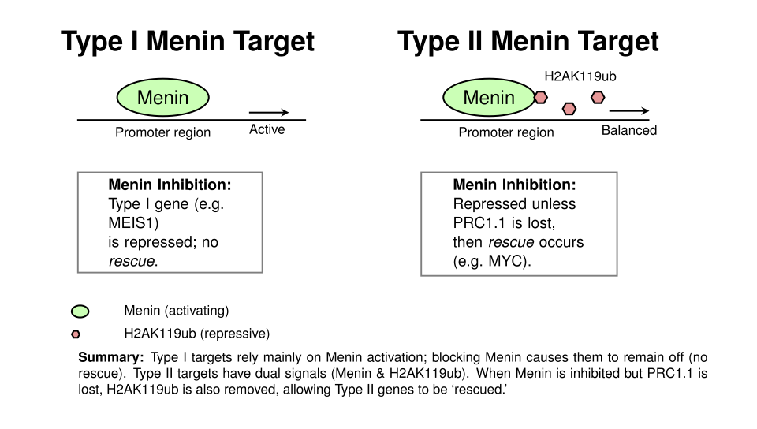

Measuring Resistance with the Rescue Index in Acute Leukemia
Imagine you’re trying to treat an infection with antibiotics, but some bacteria keep surviving and multiplying despite your best efforts. This is essentially what happens in certain blood cancers called leukemias—cancer cells develop resistance to treatments that should be killing them.
In our study published in Blood, working with Dr. Rui Lu’s team at UAB, we developed a new quantitative tool called the “rescue index” to systematically measure why some leukemia treatments fail. This index calculates how effectively cancer cells restore their gene expression to pre-treatment levels on a scale from 0 to 1, where 0 means the treatment completely suppressed the cancer genes and 1 means the cells fully recovered their original activity.
Rescue Index

Through statistical analysis of gene expression data, we discovered that not all genes in cancer cells respond to treatment identically. We identified two distinct categories: Type I targets (bound only by the menin protein) and Type II targets (bound by both menin and marked with H2AK119ub, a chemical tag that typically silences genes).
Type I and Type II Menin targets

Our rescue index analysis revealed that Type II targets showed significantly higher rescue values, meaning they were statistically more likely to escape treatment suppression than Type I targets.
Rescue index characteristics of Type I and Type II targets

Here’s the key mechanism we uncovered: when leukemia cells lose a protein complex called PRC1.1, certain cancer-promoting genes like MYC can evade the normal silencing process. Without PRC1.1, the balance between gene-activating and gene-repressing molecular signals shifts, allowing these dangerous genes to remain active despite treatment designed to shut them down.
This quantitative approach led us to test venetoclax, an FDA-approved drug, specifically against PRC1.1-deficient leukemia cells in our experimental models. Our data demonstrated that these resistant cells showed enhanced sensitivity to venetoclax treatment, suggesting a targeted therapeutic strategy.
By developing a quantification to measure resistance rather than simply observing treatment failure, we’ve identified specific molecular vulnerabilities that can guide more precise treatment selection for patients whose cancers have developed sophisticated escape mechanisms.
Citation
Epigenetic regulation of non-canonical menin targets modulates menin inhibitor response in acute myeloid leukemia
Xinyue Zhou, Lixia Zhang, Sajesan Aryal, Virginia Veasey, Amanda Tajik, Cecilia Restelli, Steven Moreira, Pengcheng Zhang, Yanfeng Zhang, Kristin Hope, Yang Zhou, Changde Cheng, Ravi Bhatia, and Rui Lu.
Blood 2024 Nov 7; 144 (19): 2018–2032.
Also read a commentary on this work
- Broken brakes: PRC loss foils menin inhibition – Commentary in Blood
For questions about this work or collaboration opportunities, please contact Dr. Cheng.